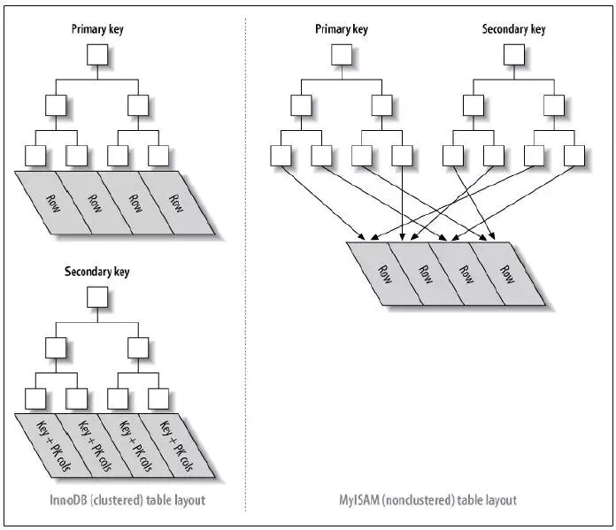

[索引]入门介绍¶
目录：
聚簇索引与非聚簇索引¶
定义与区别¶
聚簇索引，通俗来讲就是在索引结构（B+树）的叶子节点上保存着行数据，这样的索引结构就叫做聚簇索引。
同理，非聚簇索引 的叶子节点上则没有保存行数据，相对的，非聚簇索引的叶子节点上保存的是主键ID。
在 InnoDB 引擎中主键索引使用的是聚簇索引，二级索引是非聚簇索引。而 MyISAM 引擎中的索引都是非聚簇索引。
注意，InnoDB 中如果表没有主键，则会有一个唯一的
Row ID来建立聚簇索引。
下图可以看到 聚簇索引 与 非聚簇索引 的区别：
对于 聚簇索引 来说，表数据是和主键一起存储的，主键索引的叶子节点存储行数据（包含主键值），二级索引的叶子节点存储行的主键值。索引使用的是 B+树 作为索引的存储结构，非叶子节点的都是索引关键字，但是非叶子节点中不存储对应的行数据信息或行数据地址。叶子节点上的数据是主键与具体行数据。
对于 非聚簇索引 来说，表数据和索引是分成两部分存储的，主键索引和二级索引存储在储存上没有区别。都是使用 B+树 作为索引存储结构，所有的节点都是索引关键字，叶子节点上存储的索引关键字及其对应的行数据地址。
聚簇索引的优缺点¶
优点：
当进行范围查询时，聚簇索引优于非聚簇索引
精准定位查询行数据时，聚簇索引速度优于非聚簇索引，这是因为非聚簇索引定位到主键时还需要多一次寻址操作
缺点：
聚簇索引的插入速度严重依赖于插入速度，按主键顺序插入速度最快，否则可能会出现 页分裂 ,验证影响性能。因此，InnoDB 表一般都会定义一个自曾主键。
更新主键的代价很高，更新行会出现索引重建。因此，InnoDB 表一般定义为主键不可更新。
带有聚簇索引的表结构中，二级索引查询数据需要回表操作，需要两次索引查找才能找到目标行数据。
采用聚簇索引插入新数据时比非聚簇索引插入新数据慢，因为插入要保证主键不能重复，需要遍历索引的所有叶子节点，而聚簇索引的叶子节点上带有实际行数据，数据较大，会有更多的 I/O 消耗。
补充：
覆盖索引 覆盖索引是指在一次查询中，需要查询的结果字段都被定义在索引中，减少了一次 回表 操作。
回表 在采用聚簇索引的表结构中，一次查询如果命中二级索引，且不是覆盖索引查询时，需要根据二级索引拿到的主键，到主键索引中查询具体的行数据，这个操作叫做 回表 。